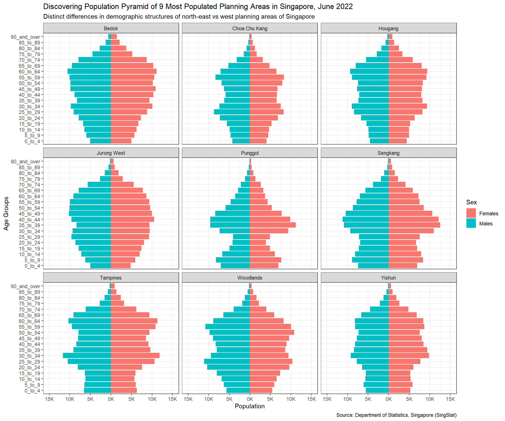

pacman::p_load(patchwork, ggthemes, hrbrthemes, ggrepel, plotly, tidyverse)Take-home Exercise 2
Creating data visualisation beyond default
1. Overview
In this take-home exercise, the task is to critique an original data visualisation of demographic structure for nine planning area in Singapore and create an alternate improved design by applying design principles and best practices.
The dataset used in this exercise is Singapore Residents by Planning Area / Subzone, Age Group, Sex and Type of Dwelling, june 2022. It is available at Department of Statistics, Singapore.
2. Original Visualisation
The original visualisation contains three sections: (i) overall population pyramid (a.k.a age-sex pyramid), (ii) population pyramid by planning area (PA) and (iii) population pyramid by subzone. The live dashboard can be found in Tableau Public.
Overall Population Pyramid Population Pyramid by Subzone |
Population Pyramid by Planning Area
|
2.1 Clarity
a. Incomprehensible dashboard title: the term ‘Age Pyramid: Sex Pattern’ does not have the same meaning as age-sex pyramid. Readers might be confused with what the visualisations are trying to show.
b. Chart titles have no lead-in or call-outs: It is good that reader is able to understand the reference country and time period from the chart title. However, it can be further improved with lead-in and call-outs to also explain the key trend or insights.
c. Y-axis ticker labels are confusing: There is an unknown age group called ‘Null’ and the age range of each age group is represented using a solo number. Readers are not able to decipher what ‘Null’ age group, the age range of each group and whether the age group ‘80’ refers to 80 to 90 years old or 80years old and above.
d. Source of data is missing: Missing recognition of data source could let the data visualisation lose credibility.
e. Excess visulisation did not meet business intent: Excessive information is provided in this dashboard. Plotting of overall population pyramid, subzone population pyramids as well as all planning area population pyramids may lead readers away from the business intent of studying only nine planning areas.
f. Instructions are provided on overview page: Readers are guided on how to use the interactive dashboard. This reduces confusion on how to use the interactive dashboard.
2.2 Aesthetics
a. Congested and repeated x-axis labels: For planning areas and subzone pages, labels for the x-axis are clear but congested. Legend and color fill can be used to replace the congested labels and the need for repeated labels.
b. X-axis between plots are not distinct: For planning areas and subzone pages, the x-axis looks like they run continuously and there are two ‘0K’ labels for the same plot. This makes it difficult to locate the axis.
c. Visualisations do not fit into a single window: For planning areas and subzone pages, it is difficult to view and make comparison between population pyramids of different areas. The blanks in the charts does not value add to the visualisations.
d. Missing horizontal grid lines: For planning areas and subzone pages, minor horizontal grid lines can be added for readers to read and compare the same age group across two areas.
d. Chart title and x-axis title at the same level: On the overview page, readers may not be able to find the chart title for the bottom chart because it is on the same level as x-axis title.
e. Dual y-axis: On the overview page, the y-axis in the middle for the bottom chart does not value-add. It would be able to remove it and reference the y-axis on the left.
3. Alternative Visualisation
3.1 Proposed design sketch
Since the task is to study the demographic structures of nine planning areas, the proposed design do not need the overall population pyramid and the population pyramid by subzone since they provide excess information that might distract the readers from what is important. Hence, the proposed design will only contain one chart which is the population pyramids of nine planning areas.
3.1 Clarity
a. Meaningful chart titles: The main title will be “Discovering Population Pyramid of 9 Most Populated Planning Areas in Singapore, June 2022” so the readers are able to understand the context of the visualisation immediately. The chart also have subtitle and commentary to provide additional clarity on the context and key observation.
b. Right sized content: The visualisation do not contain excessive information that could distract the readers as explained at the start of this section. Also, only nine instead of all planning areas are plotted so readers know immediately which areas are the targets of comparison.
c. Clear axes labels: Both axes titles are properly labelled so the readers know what each chart measures. For y-axis, the age groups are ordered from youngest at the bottom to oldest at the top per typical convention so readers can digest this information easily. For x-axis, there is no labels for male and female populations as they will be colour coded.
d. Inclusion of data source at the bottom of the chart will provide credibility to the visualisation.
3.2 Aesthetic
a. Use of legend and colour labels: The color shading and legend of the graph is used to identify the gender in each population pyramid. The intention of the colour is to help reader easily identify the gender directly from the chart without referring to the x-axis. It also helps to reduce congestion at the x-axis.
b. Clear demarcation and gridlines: The charts do not share a continuous x-axis so readers can easily differentiate the axes for different planning area charts. Grid lines are also added so readers are able to make horizontal and vertical comparisons with ease.
c. Smaller scale of x-axis major ticks: The scale of x-axis major tick marks are reduced to 5000 to show finer details and allow readers to identify smaller differences easily.
d. Readable chart size: The size of the charts in the visualisation is configured such that all the bars within the population pyramids are readable and does not feel congested.
4. Load Libraries and Dataset
The following code chunk is used to install the required R packages and load them onto R environment.
Next, read_csv() from readr as part of tidyverse package is used to import the source file which is in csv file format.
#To load dataset from .csv file
popdata <- read_csv("Data/respopagesextod2022.csv") Rows: 100928 Columns: 7
── Column specification ────────────────────────────────────────────────────────
Delimiter: ","
chr (5): PA, SZ, AG, Sex, TOD
dbl (2): Pop, Time
ℹ Use `spec()` to retrieve the full column specification for this data.
ℹ Specify the column types or set `show_col_types = FALSE` to quiet this message.5. Data Preparation
5.1 Compute frequency count by Age Group, Sex and Planning Area
Frequency count of the total population is computed based on planning area, sex and age group. As shown in code chunk below, groupby() is used to group data by defined parameters while summarise() counts the number of residents.
#Summing residents based on planning area, age group and sex
popdata <- popdata %>%
group_by(`PA`,`AG`,`Sex`) %>%
summarise('Count'= sum(`Pop`)) %>%
ungroup()`summarise()` has grouped output by 'PA', 'AG'. You can override using the
`.groups` argument.5.2 Transform population data for males
To plot the male population on the left axis of the population pyramid, ‘Pop’ values of Males are converted to negative values using the ifelse() function in code chunk below.
#Create variable for chart purposes
popdata_plot <- popdata
#If Sex = 'Males', population value becomes negative else remains unchanged
popdata_plot$Count = ifelse(popdata_plot$Sex == 'Males',
yes = -popdata_plot$Count,
no = popdata_plot$Count
)6. Visualisation
6.1 Finding the top 9 most populated planning area
As the requirement is to study the demographic structures of nine planning area, we will be choosing the nine most populated planning area.
The code chunk below consists of three main steps to obtain our target areas: First, the frequency count is computed based on planning area only using groupby() then the list is sorted from largest to smallest count using arrange(desc()). The final step is to pick out the top nine planning area in the list, which are also the nine most populated areas using top_n().
#This code chunk does the following:
#Step1) Compute resident count by PA and sort count in descending order
#Step2) Removes all but top 9 most populated PA
popdata_top9 <- popdata %>%
group_by(`PA`) %>%
summarise('total'= sum(`Count`)) %>% #Step1
arrange(desc(`total`)) %>%
top_n(9,wt=total) %>% #Step2
ungroup()6.2 Trellis display of population pyramids for top 9 most populated planning area of Singapore
For this dataset, the age group is sorted alphanumerically which would not make sense for the population pyramid axis. Hence, we need to assign the correct order for this categorical variable.
This can be done by changing the order for age group variable using factor() with the factor levels.
#Define the correct order for AG
ag_order <- c("0_to_4", "5_to_9", "10_to_14", "15_to_19",
"20_to_24", "25_to_29", "30_to_34", "35_to_39",
"40_to_44", "45_to_49", "50_to_54", "55_to_59",
"60_to_64", "65_to_69", "70_to_74", "75_to_79",
"80_to_84", "85_to_89", "90_and_over")
#Update order for AG column for popdata_plot dataframe
popdata_plot$AG <- factor (popdata_plot$AG, level = ag_order)An initial static plot is plotted using ggplot() and geom_col() from ggplot2 package. Then using facet_wrap, the population pyramids of 9 most populated planning areas are put into a 3 by 3 grid.
scale_x_continuous() is used to configure the x-axis markers and ticker labels while labs() is used to add title and subtitle on top of the chart. Last but not least, the axis titles are updated using ylab() and xlab().
#Using ggplot and facet_wrap to plot a trellis diagram of 9 population pyramid
p <- ggplot(subset(popdata_plot, PA %in% c(popdata_top9$PA)),
aes(x = Count, y= AG, fill = Sex)) +
geom_col() +
facet_wrap( ~PA, nrow = 3, ncol = 3) +
scale_x_continuous(limits = c(-15000,15000), #format x-axis
breaks = seq(-15000, 15000, 5000),
labels = paste0(as.character(c(seq(15, 0, -5),
seq(5, 15, 5))),"K"))
#Formatting axis and adding chart title and subtitle
p + labs(title="Discovering Population Pyramid of 9 Most Populated Planning Areas in Singapore, June 2022",
subtitle="Distinct differences in demographic structures of north-east vs west planning areas of Singapore",
caption="Source: Department of Statistics, Singapore (SingStat)") +
theme(plot.title = element_text(color = "black", size = 20, face = "bold")) +
ylab("Age Groups") +
xlab("Population") +
theme_bw() 
7. Reflection
My main challenge when attempting this take-home exercise is not being proficient in using the correct R packages. With suitable packages and functions, more analytical layers can be applied to the chart object to better serve the user needs. For example, I would like to add relevant statistical parameters such as mean male and female population of the nine planning areas for each age group as a vertical line in each nine plots to provide some ease of comparison for the readers.
Future work can be done to enhance the population pyramid chart. An example is using plotly package, where a tooltip can help users identify the stats of each bar in the pyramid without labelling all the charts.